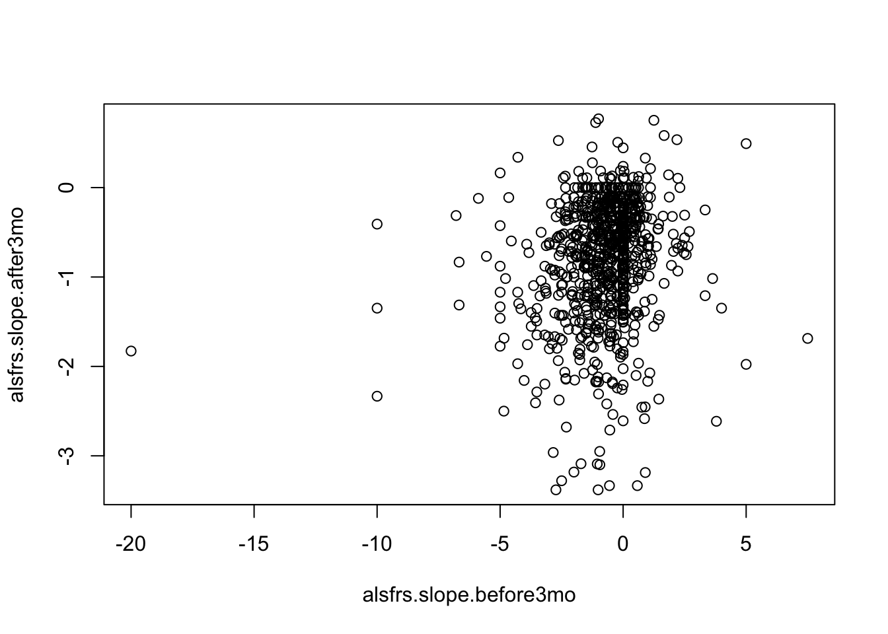
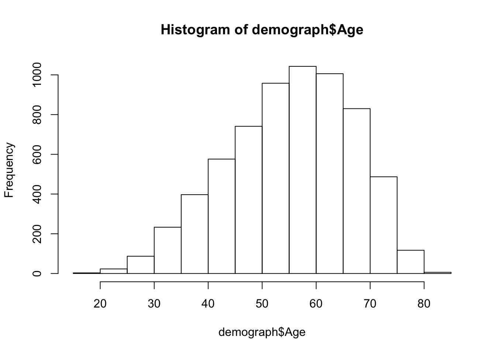
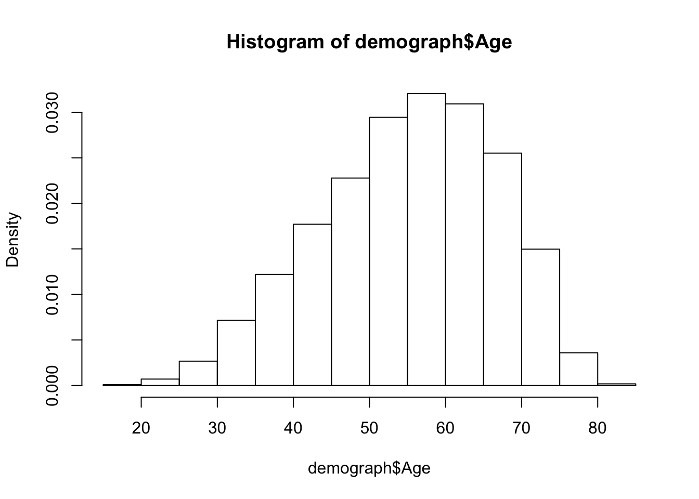
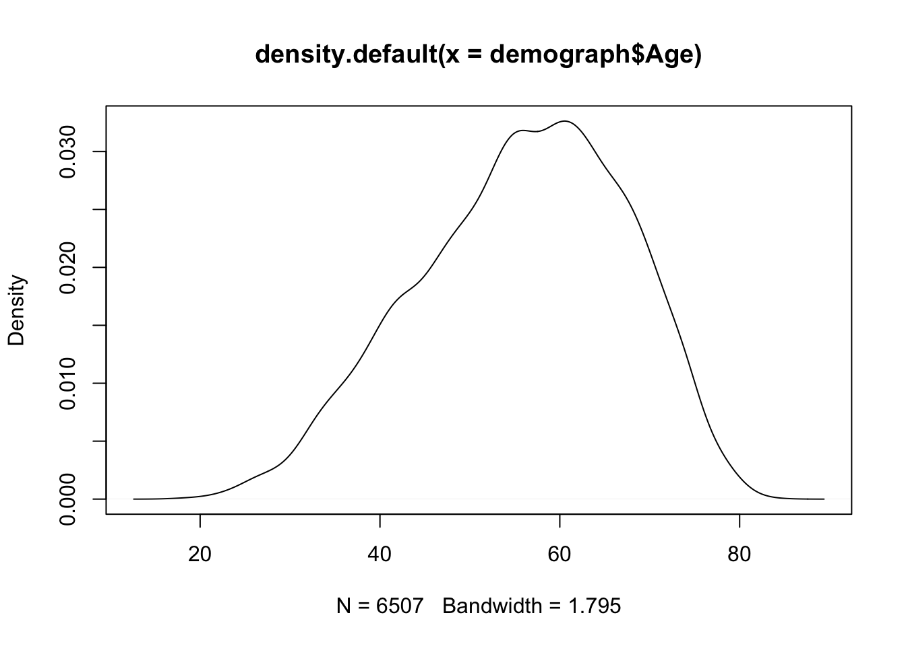
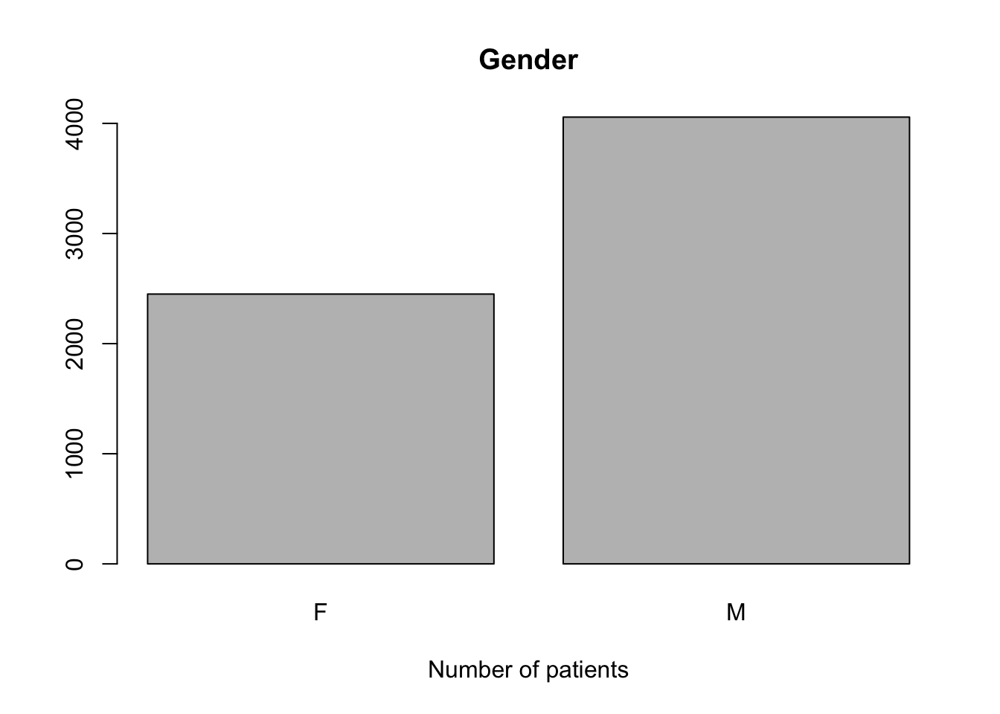
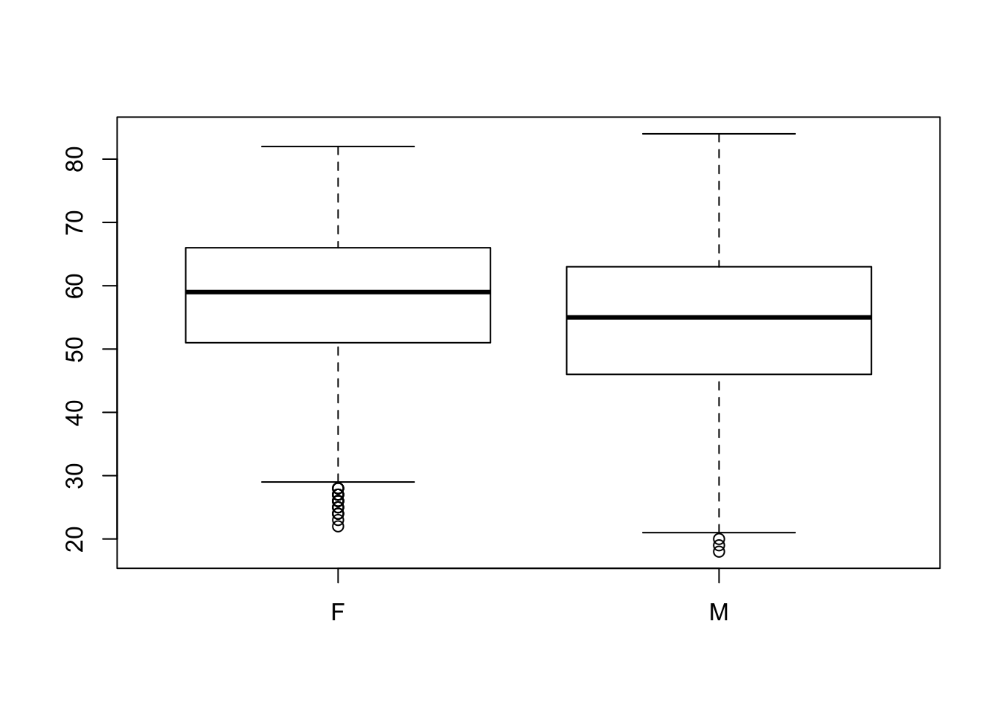

데이터 의학 w/ R (2)
R & Rstudio
우선 R이 뭔지 알아야겠죠? 다음 웹사이트를 방문해봅시다.
https://www.r-project.org/about.html
Rstudio에 대해서도 알아봅시다.
https://www.rstudio.com/products/rstudio/
[Note]
R은 “통계와 그래픽을 위한 프로그래밍 언어와 환경” 정도로 이해하고, Rstudio는 R을 효과적으로 사용하게 해주는 통합개발환경(integrated development environment, IDE) - 쉽게 도구 - 라고 이해하시면 좋겠습니다.
R & Rstudio 설치하기
R을 설치하는 것은 어렵지 않아요. 다음 웹사이트에 가서 R을 다운로드하고 설치합시다.
The R Project for Statistical Computing https://www.r-project.org/
Rstudio 설치도 간단합니다. 다음 웹사이트에 가서 Rstudio를 다운로드하고 설치합시다.
An integrated development environment (IDE) for R https://www.rstudio.com/
R GUI
다음으로 R (GUI 프로그램)을 실행해봅시다.
다음과 같은 화면이 나타날거예요.

R은 간단한 계산기로 사용될 수 있습니다. 다음 산술 연산자를 사용해보세요.
- Addition: +
- Subtraction: -
- Multiplication: *
- Division: /
- Exponentiation: ^
- Modulo: %%

[조교]
다음 동영상을 봅시다.
Basics of R
변수
(통계) 프로그래밍의 기본 개념 중에 변수(variable)라는 것이 있습니다. 변수를 사용하여 값(Value) 또는 객체(Object)를 저장할 수 있습니다. 아직은 “객체”라는 것이 무엇인지 잘 모를텐데, 우선은 R에서 사용되는 모든 유형의 데이터 구조(data structure)를 지칭한다고 이해하시면 좋겠습니다 (이에 대해서는 아래에서 다시 설명합니다), 아무튼 여기서 중요한 것은 변수를 만든다는 것은 메모리의 일부 공간을 확보한다는 것입니다. 나중에 이 변수의 이름을 사용하여 이 변수에 저장된 값이나 객체에 접근할 수 있습니다.
다음 명령을 사용하여 변수 my_var에 값 4를 할당할 수 있습니다.
my_var <- 4 # <- 대신에 = 를 사용할 수도 있습니다.
my_var
## [1] 4R의 기본 데이터 유형 (Basic data types)
R의 기본 data type은 다음과 같습니다.
- Numerics (숫자)
- Integers (정수)
- Booleans (논리값, ex. TRUE or FALSE)
- Characters (문자, 문자열)
[조교] 다음 동영상을 봅시다.
The basic data types in R
객체(Objects)
앞에서 객체에 대해 잠깐 언급하였는데, R에서 사용되는 객체, 즉 데이터 구조에는 다음과 같은 유형들이 있습니다. 이중에서 가장 기본적인 것이 Vector 입니다.
- Vector
- Factor
- Matrix
- Data frame
- List
[Note]
참고로 array 라는 것이 있는데, matrix 는 2차원 array 를, vector 는 1차원 array 를 지칭합니다.
Vector
Create vector
Vector 를 만드는 방법 중에 대표적인 것은 combine 함수 c()를 사용하는 것입니다. 괄호 사이에 쉼표로 구분된 벡터 요소(elements)를 배치합니다. 다음 예를 봅시다.
my_vec1 = c(2, 4, 6, 8) 한 벡터 내의 요소들의 데이터 유형은 항상 같아야 합니다. 다음은 character vector 와 boolean vector 의 예입니다.
my_vec2 = c("apple", "orange", "banana", "grape")
my_vec3 = c(TRUE, FALSE, TRUE, FALSE)[조교] 다음 동영상을 봅시다.
How to create and name vectors
Selecting vector elements (I)
Vector 를 구성하는 elements의 position 을 index 라고 합니다.첫번째 요소의 index 는 1 입니다. index 를 이용해서 특정 elements 만 선택할 수 있습니다. 다음 예를 봅시다.
my_vec2[2]
## [1] "orange"
my_vec2[-2] # the second from the last
## [1] "apple" "banana" "grape"
my_vec2[c(1,3)]
## [1] "apple" "banana"
my_vec2[2:4] # from the second through to the 4th element
## [1] "orange" "banana" "grape"
my_vec2[-c(2,4)] # exclude the 2nd and 4th elements
## [1] "apple" "banana"Selecting vector elements (II)
square bracket 내에 boolean vector 를 사용해서 조건을 만족하는 elements 만을 선택할 수 있습니다. 다음 예를 봅시다.
my_vec1[my_vec1 == 6] # equal
## [1] 6
my_vec1[my_vec1 < 10] # less than
## [1] 2 4 6 8
my_vec1[my_vec1 %in% c(1, 2, 5)] # membership
## [1] 2Factor
Factor는 vector의 한 형태인데, 제한된 수의 값을 요소로 취하는 R의 변수(객체)입니다. 따라서, factor는 범주형 변수입니다.
vec = c(1,2,3,1,1,2,2,3,2,3)
fvec1 = factor(vec) # convert numeric vector to factor
fvec1
## [1] 1 2 3 1 1 2 2 3 2 3
## Levels: 1 2 3factor 함수의 labels 라는 argument 를 사용해서 범주(levels)의 이름을 변경할 수 있습니다.
fvec2 = factor(vec, labels = c("mild", "moderate", "severe"))
fvec2
## [1] mild moderate severe mild mild moderate moderate
## [8] severe moderate severe
## Levels: mild moderate severelevels() 함수를 이용해서 범주의 이름을 변경할 수도 있습니다.
levels(fvec1) = c("I", "II", "III")
fvec1
## [1] I II III I I II II III II III
## Levels: I II IIIfactor 함수는 기본적으로(default) numeric 에 대해서는 오름차순으로, character 에 대해서는 alphabet 순으로 levels를 정렬합니다. 상황에 따라 levels 의 순서를 새로 정의해주어야 할 필요가 생기는데, 다음 예를 봅시다.
mon = c("Jan", "Feb", "Jan", "Mar", "Feb", "Jan", "Jul", "Aug", "Nov", "Dec", "Apr", "May", "Jun", "Oct", "Sep")
fmon1 = factor(mon)
fmon1
## [1] Jan Feb Jan Mar Feb Jan Jul Aug Nov Dec Apr May Jun Oct Sep
## Levels: Apr Aug Dec Feb Jan Jul Jun Mar May Nov Oct Seplevels argument 를 이용해서 순서를 정해줄 수 있습니다.
fmon2 = factor(mon, levels = c("Jan", "Feb", "Mar", "Apr", "May", "Jun", "Jul", "Aug", "Sep", "Oct", "Nov", "Dec"))
fmon2
## [1] Jan Feb Jan Mar Feb Jan Jul Aug Nov Dec Apr May Jun Oct Sep
## Levels: Jan Feb Mar Apr May Jun Jul Aug Sep Oct Nov Dec서로 다른 범주를 묶어서 새로운 범주로 조직할 수도 있습니다.
levels(fmon2) = list(Spring = c("Mar", "Apr", "May"),
Summer = c("Jun", "Jul", "Aug"),
Autumn = c("Sep", "Oct", "Nov"),
Winter = c("Dec", "Jan", "Feb")) # list 에 대해서는 아래에서 다룹니다.
fmon2
## [1] Winter Winter Winter Spring Winter Winter Summer Summer Autumn Winter
## [11] Spring Spring Summer Autumn Autumn
## Levels: Spring Summer Autumn Winter[조교][Using factors in R](https://www.youtube.com/watch?v=xkRBfy8_2MU)
Matrix
Matrix 는 2차원 array 입니다. 다음은 matrix 를 만드는 방법, 특정 행(row)이나 열(column), 요소(element)를 선별하는 방법, matrix의 전치(transpose)와 곱(multiplication) 연산자들의 사용예입니다.
# create a matrix from x
x = 1:12
mat = matrix(x, ncol = 3)
# select rows/columns/elements
mat[1,]
## [1] 1 5 9
mat[,3]
## [1] 9 10 11 12
mat[3,2]
## [1] 7
t(mat) # transpose
## [,1] [,2] [,3] [,4]
## [1,] 1 2 3 4
## [2,] 5 6 7 8
## [3,] 9 10 11 12
mat %*% t(mat) # matrix multiplication
## [,1] [,2] [,3] [,4]
## [1,] 107 122 137 152
## [2,] 122 140 158 176
## [3,] 137 158 179 200
## [4,] 152 176 200 224[조교] - How to create and name matrices in R
- Matrix arithmetic in R
List
List는 일반 벡터형 객체입니다. 요소로 여러 유형의 데이터구조 - 즉 벡터, matrix, 혹은 다른 list 등 - 를 포함할 수 있습니다.
List 객체는 list() 함수로 생성합니다.
다음 예는 숫자형 벡터와 문자 벡터를 각각 첫번째와 두번째 요소로 갖는 list 객체를 만드는 예입니다.
lst <- list(1:5, c('a', 'b'))
names(lst) <- c("x", "y") # name list elements (vector에서의 element naming 방식과 동일합니다.)List에서 특정 elements를 selection하는 방법은 아래와 같습니다. Return 값이 list라는 것에 주의해야 합니다.
lst[1] # select elements by position (indexing)
## $x
## [1] 1 2 3 4 5
lst["y"] # select elements by name
## $y
## [1] "a" "b"만약, return 값을 list가 아닌 해당 elements의 데이터구조로 받고자 한다면, 다음과 같이 double square brackets[[]]를 사용하거나 $ 연산자를 사용해야 합니다.
lst[[1]]
## [1] 1 2 3 4 5
lst$x
## [1] 1 2 3 4 5[조교][How to create and name lists in R](https://www.youtube.com/watch?v=Px9VNWHja4M)
Data frame
[조교] 우선 다음 동영상을 봅시다. Using the data frame in R
data frame은 기본적으로 list의 elements를 column-wise 조직한 데이터구조입니다. list와 다른 점은 matrix와 같은 배열 구조를 가지고 있다는 것과, 각 elements(data frame에서는 columns)의 길이가 같아야 한다는 것입니다.
data.frame() 함수를 이용해서 생성합니다.
name = c("Kim", "Park", "Lee")
age = c(30, 38, 42)
child = c(TRUE, FALSE, TRUE)
df <- data.frame(name, age, child)
df
## name age child
## 1 Kim 30 TRUE
## 2 Park 38 FALSE
## 3 Lee 42 TRUEdata frame의 행(row), 열(column), 특정 원소를 selection하는 방법은 아래와 같습니다.
df[1,]
## name age child
## 1 Kim 30 TRUE
df[3,2]
## [1] 42
df[,1:2]
## name age
## 1 Kim 30
## 2 Park 38
## 3 Lee 42다음은 data frame의 구조, 크기, 요약 함수입니다.
str(df)
## 'data.frame': 3 obs. of 3 variables:
## $ name : Factor w/ 3 levels "Kim","Lee","Park": 1 3 2
## $ age : num 30 38 42
## $ child: logi TRUE FALSE TRUE
dim(df)
## [1] 3 3
summary(df)
## name age child
## Kim :1 Min. :30.00 Mode :logical
## Lee :1 1st Qu.:34.00 FALSE:1
## Park:1 Median :38.00 TRUE :2
## Mean :36.67
## 3rd Qu.:40.00
## Max. :42.00Programming
프로그래밍은 기본적으로 순차진행, 반복문, 조건문으로 이루어집니다. 다음은 반복문과 조건문을 작성하기 위한 R의 문법입니다.
반복문 for loop
# summation 1 to 10
j = 0
for (i in 1:10){
j = i + j
}
j
## [1] 55[조교] [Working with for loops in R](https://www.youtube.com/watch?v=gSliFLjH3OI)
반복문 while loop
i = 0; j = 0
while (i < 10){
i = i + 1
j = j + i
}
i; j
## [1] 10
## [1] 55[Note] for loop vs. while loop
차이점이 보이시나요?
for: execute a loop a fixed number of times while: execute a loop while a condition is true
조건문
if… else…
if (i > 3){
print("i larger than 3")
} else {
print("i less than 3")
}
## [1] "i larger than 3"함수(Functions)
프로그래밍을 하다보면 반복적으로 하게 되는 작업이 있습니다. 함수를 사용하면 이러한 작업을 위해 매번 같은 코드를 작성할 필요가 없어집니다.
먼저 R에는 기본적으로 자주 사용되는 함수들이 내장되어 있습니다. 다음은 몇 가지 내장 함수들의 예입니다.
# create vectors
seq(2, 10, by=0.5)
## [1] 2.0 2.5 3.0 3.5 4.0 4.5 5.0 5.5 6.0 6.5 7.0 7.5 8.0 8.5
## [15] 9.0 9.5 10.0
rep(1:3, times=3); rep(1:3, each=3)
## [1] 1 2 3 1 2 3 1 2 3
## [1] 1 1 1 2 2 2 3 3 3
x <- c(10:20, 1, 3, 10, 12) # c() 도 함수입니다.
# sorting
sort(x); sort(x, decreasing = TRUE) # argument, 함수의 실행 방식을 특정하는 변수(parameter) 값이라고 알아둡시다.
## [1] 1 3 10 10 11 12 12 13 14 15 16 17 18 19 20
## [1] 20 19 18 17 16 15 14 13 12 12 11 10 10 3 1
rev(x)
## [1] 12 10 3 1 20 19 18 17 16 15 14 13 12 11 10
# summary
length(x); range(x)
## [1] 15
## [1] 1 20
table(x) # vounts of values
## x
## 1 3 10 11 12 13 14 15 16 17 18 19 20
## 1 1 2 1 2 1 1 1 1 1 1 1 1
# subset
unique(x) # unique values
## [1] 10 11 12 13 14 15 16 17 18 19 20 1 3
# Math functions
sum(x)
## [1] 191
mean(x); median(x)
## [1] 12.73333
## [1] 13
max(x); min(x)
## [1] 20
## [1] 1
round(1.8734, 2)
## [1] 1.87
exp(x)
## [1] 2.202647e+04 5.987414e+04 1.627548e+05 4.424134e+05 1.202604e+06
## [6] 3.269017e+06 8.886111e+06 2.415495e+07 6.565997e+07 1.784823e+08
## [11] 4.851652e+08 2.718282e+00 2.008554e+01 2.202647e+04 1.627548e+05사용자 정의 함수 만들기(User-defined function)
필요에 따라 함수를 새로 만들어서 사용하기도 합니다. 다음은 어떤 값의 제곱값을 계산하는 함수를 만드는 예입니다.
square = function(x){
squared = x*x
return(squared)
}
square(4)
## [1] 16
4^2 # 물론 이렇게 하면 됩니다. ^^
## [1] 16[조교] 다음 동영상을 봅시다. Writing functions in R
Environment
다음은 작업공간(working directory) 설정, R 객체의 조회와 제거, 도움말에 대한 함수입니다.
getwd() # setwd()
## [1] "/Users/mac/GitHub/tutorial"
ls() # list R objects
## [1] "age" "child" "df" "fmon1" "fmon2" "fvec1" "fvec2"
## [8] "i" "j" "lst" "mat" "mon" "my_var" "my_vec1"
## [15] "my_vec2" "my_vec3" "name" "square" "vec" "x"
rm(i) # remove R objects
?ls데이터 불러오기
데이터 가공, 통계, 그래픽 등 작업을 위해 외부 데이터를 불러들이는 방법에 대해서 알아봅니다.
# read a comma separated value (csv) file
demograph = read.csv("Demographic.csv") # csv 파일을 data frame 으로 불러들입니다.
head(demograph) # show the first 6 rows
## SubjectID Age Gender Race
## 1 100256 53.00000 M White
## 2 100272 62.32877 M White
## 3 10059 69.00000 F White
## 4 100603 56.86849 M White
## 5 100626 58.00000 M White
## 6 100806 66.00000 M White다음은 일반 text 파일을 불러들이는 함수입니다.
# read a delimited text file
proact = read.delim("proact_sample.txt", sep="|") # sep은 delimiter를 가리키는 argument 입니다.
# proact_sample.txt: random 1/20 sample of the PROACT dataset
str(proact)
## 'data.frame': 401372 obs. of 6 variables:
## $ SubjectID : int 917600 917600 917600 917600 917600 917600 917600 917600 917600 917600 ...
## $ form_name : Factor w/ 10 levels "ALSFRS","ALSHX",..: 6 6 6 6 6 6 6 6 6 6 ...
## $ feature_name : Factor w/ 63 levels "Absolute Band Neutrophil Count",..: 13 31 33 14 31 13 13 14 33 33 ...
## $ feature_value: Factor w/ 20834 levels "","-","-1","-10",..: 14933 8245 10180 9823 7937 19350 13377 9823 11938 12623 ...
## $ feature_unit : Factor w/ 11 levels "# per minitue",..: 10 2 2 11 2 10 10 11 2 2 ...
## $ feature_delta: int 313 133 313 201 0 201 0 313 133 0 ...데이터 쓰기
R에서 생성하거나 가공한 data frame 등의 데이터구조 객체를 파일로 외부에 저장하는 방법입니다.
demograph$Age = round(demograph$Age) # demograph 데이터프레임에서 Age 변수(column name) 값을 소수점 반올림합니다.
write.csv(demograph, file = "demograph_roundage.csv", row.names = F, quote = F)
write.table(demograph, file = "demograph_roundage.txt", quote = F, row.names = F)그래프
Scatter plot
alsfrs = read.csv("ALSFRS.csv")
attach(alsfrs)
plot(alsfrs.slope.before3mo, alsfrs.slope.after3mo)
Histogram
hist(demograph$Age)
hist(demograph$Age, freq = F)
plot(density(demograph$Age))
Bar Plot
counts <- table(demograph$Gender)
barplot(counts, main="Gender",
xlab="Number of patients")
Boxplot
boxplot(Age~Gender,data=demograph)
[조교] - Making basic graphics in R - How to plot multiple graphs in R - Customizing your plots in R